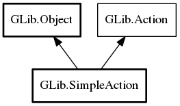

SimpleAction
Object Hierarchy:
Description:
A SimpleAction is the obvious simple implementation of the Action interface.
This is the easiest way to create an action for purposes of adding it to a SimpleActionGroup.
See also GtkAction.
Namespace: GLib
Package: gio-2.0
Content:
Creation methods:
Methods:
Signals:
Inherited Members:
All known members inherited from class GLib.Object

All known members inherited from interface GLib.Action